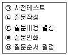
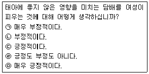
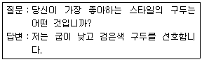
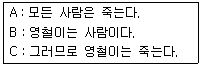
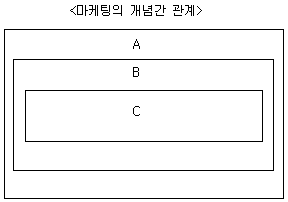
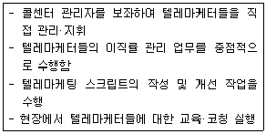

텔레마케팅관리사 (2005-03-06 기출문제)
1과목: 판매관리
1. 데이터베이스 마케팅에서 RFM분석에 대한 설명과 거리가 먼 것은?
- 구매최근성 - 얼마나 최근에 구매했는가?
- 구매빈도 - 일정기간 동안 얼마나 자주 자사제품을 구매했는가?
- 구매액 - 일정기간 동안 얼마나 많은 액수의 자사제품을 구매했는가?
- 구매방식 - 상담원을 통한 구매인가? 인터넷을 이용한 구매인가?
(정답률: 84%)

2. 아웃바운드 텔레마케팅의 판매촉진 강화를 위한 방안으로 잘못된 것은?
- 상담원은 고객의 요구만을 열심히 경청하게 한다.
- 상담원들에게 상품에 대한 사전지식을 철저히 준비토록 한다.
- 고객에게 호감을 줄 수 있는 커뮤니케이션 기술을 갖추도록 한다.
- 상담원은 고객의 반론에 대한 자연스러운 대응력을 갖추도록 한다.
(정답률: 알수없음)
3. DB마케팅의 특징으로 옳지 않은 것은?
- 고객과의 1 대 1 관계 구축
- 쌍방적 의사소통
- 단기간의 고객관리
- 고객의 데이터베이스화
(정답률: 알수없음)
4. 고객관계관리(CRM)의 5대 요소에 해당되지 않는 것은?
- 제품판매과정의 자동화
- 기업 중심의 마케팅
- 다양한 고객서비스 채널 제공
- 최적의 온라인 서비스 제공
(정답률: 알수없음)
5. 현대 마케팅의 특징으로 가장 적당한 것은?
- 생산중심 마케팅
- 고압적 마케팅
- 고객지향적 마케팅
- 기업중심적 마케팅
(정답률: 알수없음)
6. ACD까지만 연결되고 상담원이 응답하기 전에 전화를 건 사람이 전화를 끊은 통화를 무엇이라 하는가?
- Abandon Call
- After Call
- Auto Call
- Average Call
(정답률: 80%)
7. 아웃바운드 텔레마케팅의 특징이 아닌 것은?
- 공격적이며 성과지향성이 강하다.
- 1 대 1 고객관계 개선과 차별적 대응이 가능하다.
- 고정고객 관리와 고객이탈 방지의 효과가 크다.
- 상품 판매만을 주목적으로 한다.
(정답률: 알수없음)
8. 아웃바운드에 대한 설명 중 옳은 것은?
- 인바운드와는 달리 수동적이고 소극적인 마케팅을 전개한다.
- 고객발굴 및 판매, 제품안내, 판매촉진, 사후관리 등을 위한 기업주도형 마케팅이다.
- 고객으로부터의 문의, 항의, 주문 등을 위한 마케팅을 전개한다.
- 주로 외부에서 걸려 오는 전화를 응대한다.
(정답률: 92%)
9. 특별히 훈련된 기업 내부 인력에 의해서 수행되며 사내에 콜센터 시스템을 갖추고 텔레마케팅을 운영하는 기업체를 무엇이라고 하는가?
- In-House TM
- Host TM
- In-Bound TM
- Out-Bound TM
(정답률: 63%)
10. 아웃바운드 TM의 대상인 고객의 정보에 대한 효율적인 관리 방법이 아닌 것은?
- 고객정보의 지속적인 확충
- 고객정보 및 속성별 질적 개선
- 고객정보의 유출방지
- 고객속성에 따른 획일적 대응
(정답률: 90%)
11. 고객이 상담원과 대화하기 이전에 대기하고 있는 총시간을 응답한 총 통화수로 나눈 값은?
- 평균마무리처리시간
- 평균통화시간
- 표준작업일 평균통화수
- 평균응대속도
(정답률: 60%)
12. 아웃바운드 판매전략의 일련과정이 바르게 나열된 것은?
- 잠재고객 특성 정의 → 잠재고객 파악 → 스크리닝 → 판매 → 사후관리
- 잠재고객 특성 정의 → 스크리닝 → 잠재고객 파악 → 판매 → 사후관리
- 잠재고객 파악 → 잠재고객 특성 정의 → 스크리닝 → 판매 → 사후관리
- 잠재고객 파악 → 스크리닝 → 잠재고객 특성 정의 → 판매 → 사후관리
(정답률: 73%)
13. 이전에 일체의 접촉이 없었던 상대에게 전화에 의한 판매나 프로모션을 실시하는 것을 지칭하는 용어는?
- Cold Call
- Burn-out
- Repeat Call
- Call Blending
(정답률: 62%)
14. 마케팅 개념 중 아웃바운드 텔레마케팅을 활용하는 마케팅이라고 볼 수 없는 것은?
- TV광고 마케팅
- 1 대 1 마케팅
- 데이터 베이스 마케팅
- 다이렉트 마케팅
(정답률: 알수없음)
15. 아웃바운드 텔레마케팅의 7단계 판매과정 중 전화 전 계획과 관계가 없는 사항은?
- 고객에 대한 정보의 검토
- 전화를 건 목적의 설명
- 전화를 하는 목적의 검토
- 전화를 걸기 위한 마음의 준비
(정답률: 30%)
16. 고객의 부재로 인해 통화가 항상 성공하는 것이 아니기 때문에 다음 통화에서는 성공할 수 있도록 사전에 예상 접촉가능시각을 미리 준비하는 콜은?
- Unattended Call
- Cold Call
- Handled Call
- Scheduled Call
(정답률: 72%)
17. 마케팅 요소 중 '4Ps'가 아닌 것은?
- Product
- Person
- Promotion
- Place
(정답률: 알수없음)
18. 데이터베이스 마케팅에서 사용되는 데이터마이닝에 대한 내용으로 옳지 않은 것은?
- 데이터마이닝은 데이터웨어하우스를 구축한 다음 정보분석과정을 거쳐 경영전략을 지원하는 정보를 추출하는 것이다.
- 데이터마이닝은 일종의 데이터분석기법이다.
- 대용량의 고객데이터 분석이 복잡하여 고객데이터의 활용도를 저하시켰다.
- 데이터마이닝은 데이터 변수 간의 통계적인 상관관계분석이나 시계열분석 등이 이루어지는 다양한 통계처리과정을 말한다.
(정답률: 알수없음)
19. 고객로열티 형성에 영향을 미치는 요소가 아닌 것은?
- 구매횟수
- 구매방법
- 회사 기여도
- 이용기간과 실적
(정답률: 알수없음)
20. 고객관계관리(CRM)의 기본원칙이 아닌 것은?
- 고객의 정보를 전략적으로 활용하고 이 정보를 기업의 지적 자산으로 관리할 수 있어야 한다.
- 관계(Relationship)를 프로세스(Process)로 인식해 고객을 지원하고 고객을 위한 활동이 원 스톱 서비스(One Stop Service) 체계로 전환될 수 있어야 한다.
- 고객관계관리(CRM)의 원칙은 상품판매만을 목적으로 하고 있다.
- 회사의 가치는 CRM의 가치, 즉 고객의 가치와 주주가 요구하는 가치가 균형을 이루어야 한다.
(정답률: 알수없음)
21. 고객 데이터베이스를 분석하는 기법에 대한 설명으로 잘못된 것은?
- 회귀분석 - 영향을 주는 변수와 영향을 받는 변수가 서로 선형관계가 있다고 가정하여 이루어지는 분석방법
- 판별분석 - 집단 간의 차이가 어떠한 변수에 의해 영향을 받는가를 분석하는 방법
- 군집분석 - 여러 대상들을 몇 개의 변수를 기초로 서로 비슷한 것끼리 묶어주는 분석방법
- RFM - 고객의 제품선택 특성을 중심으로 분석하는 방법
(정답률: 알수없음)
22. 측정의 신뢰도와 타당도에 관한 설명 중 틀린 것은?
- 타당도는 측정하고자 하는 개념이나 속성을 정확히 측정하였는가의 정도를 의미한다.
- 신뢰도는 측정치와 실제치가 얼마나 일관성이 있는지를 나타내는 정도이다.
- 신뢰도가 높아도 반드시 측정의 타당도가 높은 것은 아니다.
- 내적 타당도와 외적 타당도는 상충관계가 전혀 없다.
(정답률: 60%)
23. 아웃바운드 텔레마케팅에 해당되지 않는 것은?
- 대금 회수
- 고객불만 접수
- Happy Call
- 계약 갱신
(정답률: 알수없음)
24. 아웃바운드 TM시 고객에게 전화를 할 때 유의할 사항과 거리가 먼 것은?
- 고객에게 전화를 건 목적과 이유를 먼저 설명한다.
- 상품의 기본적인 강점을 먼저 설명하고 부차적인 내용을 설명한다.
- 고객이 구매할 수 있도록 동기부여를 시킬 수 있어야 한다.
- 고객이 구매 결정을 하면 즉시 전화를 끊고 다음 고객정보를 모니터링하여 전화 준비를 한다.
(정답률: 알수없음)
25. 상품의 수명주기(PLC；Product Life Cycle)의 순서로 올바른 것은?
- 도입기 → 성숙기 → 성장기 → 포화기 → 쇠퇴기
- 도입기 → 성장기 → 포화기 → 성숙기 → 쇠퇴기
- 도입기 → 성장기 → 성숙기 → 포화기 → 쇠퇴기
- 도입기 → 성숙기 → 포화기 → 성장기 → 쇠퇴기
(정답률: 70%)
2과목: 시장조사
26. 다음에서 설문지 작성과정을 올바르게 표현한 것은?

- ㉢ → ㉡ → ㉤ → ㉠ → ㉣
- ㉡ → ㉢ → ㉤ → ㉠ → ㉣
- ㉡ → ㉤ → ㉢ → ㉠ → ㉣
- ㉢ → ㉤ → ㉡ → ㉠ → ㉣
(정답률: 50%)
27. 다음 설문의 내용을 보고 설문지 작성의 어떤 점을 유의하여야 하는가?

- 응답자를 비하하거나 무시하는 표현 금지
- 응답하기 곤란한 질문은 간접적으로 질문
- 사실을 비화한 허구적 질문
- 유도 또는 강요하는 표현 금지
(정답률: 60%)
28. 시장조사에서 흔히 이용되고 있는 투사법에 속하는 기법으로 어떤 주제나 제품 등에 관한 일련의 만화나 그림을 모사하여 응답자에게 보여주고 이야기를 하도록 함으로써 그 것에 대해 어떤 감정을 가지고 있는가를 알아내는 방법은?
- 통각시험법(Thematic Apperception Test)
- 단어연상법(Word Association Test)
- 문장완성법(Sentence Completion Test)
- 만화완성법(Cartoon Completion Test)
(정답률: 알수없음)
29. 다음은 어느 유형의 응답 형태에 속하는가?

- 자유응답형
- 다지선다형
- 양자택일형
- O·X형
(정답률: 55%)
30. 시장조사방법 중 전화조사의 장점은?
- 응답자 개인당 비용이 전화조사가 우편조사보다 많이 소요된다.
- 우편조사보다는 전화조사가 조사결과를 얻는 데 소요되는 시간이 짧다.
- 전화조사에는 면접자의 편견이 개입될 가능성이 높다.
- 응답률이 우편조사보다 전화조사가 매우 낮다.
(정답률: 알수없음)
31. 자동 전화조사방법의 종류가 아닌 것은?
- CATI(Computer Assisted Telephone Interviewing)
- UMS(Unifiled Massaging System)
- ARS(Auto Response System)
- PD(Predictive Dialing)
(정답률: 59%)
32. 비확률표본추출법에 해당되는 표본추출의 종류는?
- 단순무작위표본추출법
- 층화표본추출법
- 군집표본추출법
- 할당표본추출법
(정답률: 50%)
33. 다음에서 설명하는 과학적 접근방법은 무엇인가?

- 귀납법
- 논리적 실증주의
- 반증주의
- 연역법
(정답률: 알수없음)
34. 설문지를 이용한 서베이(Survey) 방법에 해당되지 않는 것은?
- 대인면접법
- 전화면접법
- 우편조사법
- 심층면접법
(정답률: 80%)
35. 소비자행동조사의 설명으로 올바른 것은?
- 소비자의 행위결과는 물론 인지적 과정, 그리고 보다 심층적인 조사가 이루어진다.
- 소비자가 실제로 어떤 상품을 어떻게 소비 또는 사용하고 있는가에 대해 직접 체험하는 것이다.
- 기존 통계 등을 사용하여 변수를 교차시켜 밝혀낸다.
- 과거로부터의 정보만을 기반으로 결론을 산출한다.
(정답률: 알수없음)
36. 시장조사를 하는 과정의 순서로 올바른 것은?
- 문제의 정의 → 조사실시 → 조사설계 → 조사 결과의 해석 및 보고
- 문제의 정의 → 조사설계 → 조사 결과의 해석 및 보고 → 조사실시
- 조사실시 → 조사설계 → 문제의 정의 → 조사 결과의 해석 및 보고
- 문제의 정의 → 조사설계 → 조사실시 → 조사 결과의 해석 및 보고
(정답률: 알수없음)
37. 설문지를 통해 자료를 수집하는 방법 중에 조사상황에 따라 신속하게 질문방법, 절차, 순서, 내용을 바꿀 수 있는 자료수집 방법은?
- 개인면접법
- 전화조사방법
- 우편조사방법
- 인터넷조사방법
(정답률: 알수없음)
38. 마케팅 조사설계의 기본요소로서 일반적으로 마케팅 관리자가 통제하는 변수이다. 이 변수는 관찰하고자 하는 현상의 원인이라고 가정한 변수이다. 이 변수를 무엇이라 하는 가?
- 결과변수
- 종속변수
- 외생변수
- 독립변수
(정답률: 50%)
39. 설문지 작성시 고려해야 할 원칙 중 옳지 않은 것은?
- 다지선다형 응답에서는 가능한 응답을 모두 제시해 주어야 한다.
- 응답항목들 간에 그 내용이 중복되지 않도록 한다.
- 사용하는 단어는 가능한 여러 가지 뜻으로 해석될 수 있는 것을 사용해야 한다.
- 대답을 유도하는 질문을 해서는 절대 안 된다.
(정답률: 알수없음)
40. 시장조사에 대한 설명으로 옳은 것은?
- 시장조사에 있어 특정한 분석모델은 없다.
- 시장조사는 고객의 욕구와 문제를 파악하고, 성장기회를 포착하기 위해 이용된다.
- 시장조사의 분석자료는 의사결정에만 이용된다.
- 시장조사는 상품이 완성된 후 실시한다.
(정답률: 알수없음)
41. 사전조사에 관한 설명 중 옳지 않은 것은?
- 몇몇 응답자 표본을 선정하여 미리 조사해 보는 것이다.
- 전화를 이용한 사전조사시 부적절한 단어와 문장은 사용하지 않아야 한다.
- 전화질문서의 적절성을 조사 전에 예비적으로 실시해 보는 것이다.
- 사전조사는 전화조사의 효율성과 비전략화에 도움이 도움이 된다.
(정답률: 알수없음)
42. 과학이 가지는 하위목표는 현실세계의 문제해결을 위해 적용될 수 있는 범위 혹은 한계를 의미하는데, 이는 다음 중 무엇을 가리키는가?
- 일반화
- 예 측
- 통 제
- 설 명
(정답률: 알수없음)
43. 고객만족도 조사의 3원칙이 아닌 것은?
- 계속적으로 실시되어야 한다.
- 정량적으로 표현되어야 한다.
- 정확하게 실시되어야 한다.
- 소극적으로 조사되어야 한다.
(정답률: 90%)
44. 2차 자료를 분류하는 방법 중에 자료원에 따라 내부자료와 외부자료로 구분할 수 있다. 외부의 독립적인 조사기관들이 영리를 목적으로 특정한 자료를 수집·가공하여 특정 기업이나 기관에 판매하는 상업용 자료는?
- 신디케이트 자료원
- 정부기관 간행물
- 기타 자료원
- 편람(Handbook)
(정답률: 알수없음)
45. 과학적 접근법으로서 사회조사분석에 대한 설명으로 옳지 않은 것은?
- 통계적 방법을 사용한다.
- 지적인 오류를 피하고자 하는 시도이다.
- 사회현상에 대한 이해를 바탕으로 한 지식을 축적한다.
- 이미 검증된 사실을 규명한다.
(정답률: 알수없음)
46. 텔레마케터가 사전조사를 실시할 때 고려해야 할 점으로 옳은 것은?
- 사전조사시 선정할 응답자수는 크게 중요하지 않다.
- 사전조사의 응답자는 본 조사의 응답자특성과 비슷해야 한다.
- 사전조사 시간은 본 조사의 3배 정도가 적당하다.
- 사전조사 실시 후 점검시에는 질문의 배열상태만 점검하면 된다.
(정답률: 80%)
47. 전화조사의 단점을 잘못 설명한 것은?
- 조사자에 대한 통제가 어렵다.
- 미등재 전화번호의 비중이 크다.
- 전화번호의 정확성이 떨어진다.
- 응답자가 시간의 제한을 받을 경우에는 중단될 수 있다.
(정답률: 34%)
48. 전화조사시 전화번호부에 등재되지 않은 가구가 전체 모집단에서 상당부분을 차지 한다고 할 때 사용하는 특수한 표본추출기법은?
- SDD(Systemmatic Digit Dialing)
- RDD(Random Digit Dialing)
- PDS(Purposive Dial Sampling)
- QDD(Quota Digit Dialing)
(정답률: 50%)
49. 전화면접자의 기본자세가 아닌 것은?
- 정확한 단어와 정돈된 말투를 사용한다.
- 한 질문에 두 가지 이상의 내용을 포함하지 않도록 한다.
- 정보파악을 위해 매우 세밀하고 자세히 질문한다.
- 부정이나 긍정을 유도하는 질문은 하지 않는다.
(정답률: 알수없음)
50. 표본추출을 할 때 가장 먼저 해야 할 것은?
- 모집단 규정
- 표본크기 산출
- 표본체계 확인
- 표본할당
(정답률: 알수없음)
3과목: 텔레마케팅관리
51. 텔레마케팅 용어에 대한 설명으로 옳지 않은 것은?
- ACD(Automatic Call Distributor) - 상담원에게 균등하게 Call Transfer한다.
- VMS(Voice Mail System) - 상담원에게 메시지를 남기는 기능
- ANI(Automatic Number Identification) - 외부에서 걸려 온 전화번호를 추적하는 기능
- ASR(Automatic Speech Recognition) - 외부에서 전화가 걸려오면 자동으로 응답하는 서비스
(정답률: 28%)
52. 텔레마케터에게 요구되는 자질로 옳지 않은 것은?
- 정확한 발음과 음성
- 훌륭한 청취력과 이해심
- 과도한 경쟁심
- 조직 적응력
(정답률: 100%)
53. 고객 지향적 상담화법 중 성공적으로 대화를 이끌어 내는 대화법으로 적절하지 않는 방법은?
- 완전한 문장 사용보다는 생략하는 문장을 사용한다.
- 가벼운 유머와 칭찬화법으로 상대의 마음을 연다.
- 자신감 있고 확신에 찬 말씨를 사용한다.
- 적절한 맞장구 표현
(정답률: 알수없음)
54. 모니터링 평가요소로 부적합한 것은?
- 음성의 친절성
- 업무의 정확성
- 응대의 신속성
- 근태(勤怠)의 성실성
(정답률: 91%)
55. 콜센터의 생산성향상을 저해하는 요소가 아닌 것은?
- 텔레마케터의 높은 이직률
- 시스템의 미비
- 스크립트 개발
- 콜센터 관리자의 지원 부족
(정답률: 알수없음)
56. 텔레마케팅을 위한 스크립트의 작성방법 중 응답되는 내용을 '예 / 아니오'식으로 나누고 이에 따라 다음의 질문이나 설명이 뒤따르도록 작성하는 방식은?
- 회화식
- 질문식
- 차트식
- 혼합식
(정답률: 46%)
57. 콜센터 시스템의 구성 요소가 아닌 것은?
- PSTN(Public Switched Telephone Network) 장비
- CTI(Computer Telephony Integration) 장비
- ATM(Asynchronous Transfer Mode) 장비
- ACD(Automatic Call Distribution) 장비
(정답률: 알수없음)
58. 텔레마케팅의 특성이 아닌 것은?
- 쌍방향으로 이루어진다.
- 비용 대비 효과가 낮다.
- 도입이 용이하다.
- 고객정보를 근간으로 한다.
(정답률: 알수없음)
59. 가장 바람직한 교육형태는?
- 강사 중심으로 진행되는 강의식 교육
- 의무적으로 참여하도록 하는 교육
- 지식 전달만 중점적으로 교육
- 스스로 생각하고 느끼게 하는 교육
(정답률: 알수없음)
60. 상담원 채용시 고려해야 할 사항으로 옳지 않은 것은?
- 주요 대상고객 특성
- 기존 상담원 특성
- 상품 / 서비스 특성
- 인사 담당자의 주관적 특성
(정답률: 91%)
61. 콜센터 시스템 중에서, 모든 콜에 대하여 모니터링된 데이터를 저장하여 콜처리통계 및 상담이력 현황을 관리하며, 각종 아웃바운드 서비스를 위한 콜센터 운영데이터를 관리하는 장비는?
- 교환기
- 자동호분배기
- DB서버
- 녹음장비
(정답률: 알수없음)
62. 콜센터의 기대효과로 볼 수 없는 것은?
- 업무통계처리로 인건비, 부대비용 부담 증대
- 고객 요구사항의 신속한 처리
- 기업의 서비스에 대한 고객의 이미지 증대
- 데이터베이스마케팅을 통한 잠재고객 창출
(정답률: 알수없음)
63. 고객리스트가 데이터베이스로 형성되어 있어 상담원이 고객을 선택하면 자동적으로 전화를 걸어주는 기능을 무엇이라고 하는가?
- Progressive Dialing
- Power Dialing
- Predictive Dialing
- Preview Dialing
(정답률: 알수없음)
64. 텔레마케터의 성과관리를 위한 목표 결정시 유의할 사항으로 적합하지 않는 것은?
- 목표를 구체적 행동으로 기술한다.
- 목표는 가능한 아주 높은 수준으로 결정한다.
- 목표 달성 여부를 측정할 수 있어야 한다.
- 목표 달성 시점이 명시되어야 한다.
(정답률: 알수없음)
65. 텔레마케팅에서 지향하는 마케팅 전략을 바르게 설명한 것은?
- 판매 중심적 마케팅 전략
- 고객 중심적 마케팅 전략
- 제품 중심적 마케팅 전략
- 기업 중심적 마케팅 전략
(정답률: 80%)
66. 다음은 마케팅의 몇 가지 개념 간의 포함관계를 나타낸 그림이다. A, B, C의 위치에 맞는 개념이 A-B-C 순으로 올바르게 나열된 것은?

- A - 마케팅, B - 다이렉트마케팅, C - 텔레마케팅
- A - 다이렉트마케팅, B - 텔레마케팅, C - 마케팅
- A - 텔레마케팅, B - 마케팅, C - 다이렉트마케팅
- A - 다이렉트마케팅, B - 마케팅, C - 텔레마케팅
(정답률: 알수없음)
67. 텔레마케팅에 대한 설명으로 옳지 않은 것은?
- 정보통신 기술을 활용한다.
- 훈련받은 인적 자원에 의해 이루어진다.
- 시간을 효과적으로 관리하기가 어렵다.
- 기업의 마케팅 활동에 다양하게 사용될 수 있다.
(정답률: 알수없음)
68. 모니터링의 진정한 목적이 아닌 것은?
- 상담원의 통화품질 평가
- 상담원의 스킬 향상
- 고객 만족과 로열티, 수익성 향상을 위한 관리 수단
- 상담원의 실적 관리 및 통제수단
(정답률: 55%)
69. OJT에 관한 설명에 해당하지 않는 것은?
- OJT는 On the Job Training의 약자이다.
- 업무 중심의 현장훈련을 의미한다.
- 대체로 오리엔테이션은 강의식(講義式)에 의존한다.
- 사례에 의한 훈련은 OJT에 해당하지 않는다.
(정답률: 알수없음)
70. 콜센터 리더의 능력으로 옳지 않은 것은?
- 직원 교육훈련 능력 및 마케팅 전략 수립능력
- 끊임없는 자기개발 및 원만한 인간관계
- 해당업무에 대한 지식과 변화에 따른 유연한 사고 방식
- 상담원의 승진 인사에 대한 주관적인 판단 및 통솔력
(정답률: 알수없음)
71. 리더십 역량을 측정하는 용어 중 올바르게 설명되지 않은 것은?
- Clarity(명확성) - 의사소통시 명확한 자신의 의사를 전달하여 직원이 혼란스럽거나 추측하지 않도록 하는 역할
- Confidence-building(신뢰성) - 리더의 권력을 인정함으로 그들이 리더와 자신의 일에 대해 신뢰하게 하는 역할
- Perspective(균형 잡힌 시각) - 전체 업무에 대한 왜곡되지 않은 시각을 견지하는 역할
- Involvement(참여) - 직원들이 그들의 일을 스스로 판단해서 할 수 있도록 허락하는 역할
(정답률: 50%)
72. 텔레마케팅을 실시할 때 고객과의 커뮤니케이션을 원활히 진행시키기 위한 도구는?
- 슈퍼바이저(Supervisor)
- 모니터링(Monitoring)
- 스크립트(Script)
- 스크리닝(Screening)
(정답률: 75%)
73. 텔레마케터의 능력개발을 위한 교육방법으로 부적합한 것은?
- 신상품이 출시될 경우 스크립트를 개발하여 제공한다.
- 정기적인 모니터링을 통해 개인별 코칭을 실시한다.
- 업무지식을 충분히 익힐 수 있도록 전문지식만을 선별하여 교육한다.
- 업무에 따른 표준 매뉴얼을 제공한다.
(정답률: 알수없음)
74. 다음과 같은 역할을 하는 콜센터 구성원은?

- 슈퍼바이저
- 모니터링 담당자
- 인사 / 채용 담당자
- 통화 품질 관리자
(정답률: 73%)
75. 텔레마케터의 상담내용을 모니터링하여 상담원의 평가를 통하여 상담품질을 향상시키는 업무를 담당하는 사람을 표현하는 용어는?
- ATT(Average Talk Time)
- QC(Quality Control)
- QAA(Quality Assurance Analyst)
- CMS(Call Management System)
(정답률: 알수없음)
4과목: 고객응대
76. 고객의 불만족을 처리하는 태도로 옳지 않은 것은?
- 먼저 사과해야 한다.
- 천천히 해결하도록 한다.
- 원인을 규명해 고객에게 알려주어야 한다.
- 고객과 논쟁을 하려고 하면 절대 안 된다.
(정답률: 알수없음)
77. 주문접수 처리에 요구되는 사항과 거리가 먼 것은?
- 고객번호, 전화번호 등 고객데이터의 정확한 작동과 관리가 이루어져야 한다.
- 고객의 기본이력을 통해 그 고객의 특성을 이해하여 신상정보 DB를 상업적으로 이용한다.
- 문의나 요구사항, 접수에 대해서는 전화를 받는 사람이 즉시 원터치 중심으로 처리할 수 있어야 한다.
- 고객관리에서 가장 기초적인 고객정보 화면의 신규입력과 수정입력이 용이하게 이루어져야 한다.
(정답률: 알수없음)
78. 텔레마케터가 말하는 간격을 통해 의미를 강조하고 고객에게 효과적으로 전달하고자 하는 기법으로 쉼표에서는 한 박자, 문장을 마친 뒤에는 두 박자 정도의 차이를 두는 기법은?
- 산울림법
- 휴지(Pause)기법
- 예화법
- 자료전환제시법
(정답률: 알수없음)
79. Werhnch & Koontz의 커뮤니케이션 과정 모델에 따른 커뮤니케이션 과정이 올바로 나열된 것은?
- 발신 → 해독 → 이해 → 메시지 → 기호화 → 수신
- 발신 → 이해 → 기호화 → 메시지 → 해독 → 수신
- 발신 → 해독 → 기호화 → 메시지 → 수신 → 이해
- 발신 → 기호화 → 메시지 → 수신 → 해독 → 이해
(정답률: 55%)
80. 제품을 판매하거나 서비스를 제공하는 과정에서 관련되는 다른 제품이나 서비스에 대하여 판매를 유도하고 촉진시키는 마케팅 기법으로 인바운드 고객 상담시 많이 행해지는 기법은?
- 플러스 셀링(Plus Selling)
- 크로스 셀링(Cross Selling)
- 추가 셀링(Additional Selling)
- 협력 셀링(Cooperative Selling)
(정답률: 알수없음)
81. 고객이 느끼는 정신적·육체적 상황을 의미하는 용어는?
- CAT(Computer Assisted Telemarketing)
- CPA(Call Progress Analysis)
- CSP(Customer Situation Performance)
- CSR(Customer Service Representative)
(정답률: 80%)
82. 고객 불평·불만을 처리함로써 얻을 수 있는 효과로 옳지 않은 것은?
- 고객으로부터 신뢰를 얻음으로써 구전효과를 꾀할 수 있다.
- 마케팅 및 경영활동에 유용한 정보로 활용할 수 있다.
- 법적 처리 등 사후 비용이 더욱 늘어나 장기적으로 회사의 손실을 초래할 수 있다.
- 고객유지율 증가로 장기적·지속적인 이윤을 높일 수 있다.
(정답률: 알수없음)
83. 대인커뮤니케이션의 설명으로 틀린 것은?
- 설득 커뮤니케이션은 크게 마케팅 커뮤니케이션, PR 커뮤니케이션, 선전 커뮤니케이션으로 이루어진다.
- 마케팅 커뮤니케이션은 광고, 대인판매, 판매촉진 커뮤니케이션으로 이루어진다.
- 1：1 커뮤니케이션이란 여러 사람을 대상으로 메시지를 주고받는 것을 의미한다.
- 텔레마케팅은 마케팅 커뮤니케이션의 일종이며, 비대면 접촉을 중시한다.
(정답률: 82%)
84. 성공적인 세일즈 화법으로 옳지 않은 것은?
- 상품서비스의 이익과 장점을 반복하여 고객이 납득할 수 있게 설명한다.
- 왜 고객에게 지금 이익이 되는가를 집중 설명한다.
- 고객과 통화해야 하는 이유를 사전에 미리 이야기하여 고객과 친밀감을 조성한다.
- 어떠한 상황에서도 동일한 응대과정을 갖는다.
(정답률: 90%)
85. 인바운드 고객상담의 활용분야로 적절하지 못한 것은?
- 기업의 제품, 서비스 개선에 피드백으로 활용
- 고객 클레임 처리
- 신상품 홍보, 상품이미지 조사
- 고객문의사항, 소비자고발 접수
(정답률: 알수없음)
86. 서비스에 대한 설명으로 적합하지 않은 것은?
- 고객만족을 위한 종합예술이다.
- 고객의 오감을 만족시키는 것이다.
- 보이지 않는 고객의 마음까지 읽는 것이다.
- 고객의 마음을 얻기 위해 순종하는 수직적 인간관계이다.
(정답률: 91%)
87. CTI(Computer Telephony Integration)솔루션의 도입시 이점에 대한 설명으로 옳지 않은 것은?
- 컴퓨터와 콜을 처리하는 교환기가 상호 연결되어 각종 콜과 데이터베이스와 연동이 가능하게 되었다.
- CTI 도입으로 고객에게 자동으로 전화를 걸고 해당 고객의 정보를 상담원의 화면에 나타내 줌으로써 공격적인 마케팅이 가능하게 되었다.
- 상담 내용이 자동으로 모니터링되어 업무 효율성을 높일 수 있게 되었다.
- 콜을 균등하게 연결해 주는 ACD(Automatic Call Distribution) 기능이 가능하게 되었다.
(정답률: 알수없음)
88. 구매유도를 위한 고객응대 요소가 아닌 것은?
- 구매계획과 구매목표 간파
- 상품선택을 위한 구체적인 정보 제공
- 구매판단 기준 제공
- 가망고객에 대한 소극적인 설득
(정답률: 알수없음)
89. 인바운드 고객상담시 고객에게 전달할 수 있는 적절한 반응이 아닌 것은?
- 고객과의 대화 중 무언응대
- 적절한 호칭 사용
- 공감의 표현
- 반론에 대한 적절한 설득
(정답률: 알수없음)
90. TM 분류에 관한 표이다. 다음 중 이동전화를 사용하는 고객들이 부가 서비스를 받고자 할 때 해당되는 부분은?
- 은 행
- 학습지 보험
- 고객상담실 일반적 문의
- 연체관리 Happy Call
(정답률: 알수없음)
91. 고객서비스의 금기사항과 효과적인 대응방법이 잘못 연결된 것은?
- 저는 모릅니다. → 제가 알아보겠습니다.
- 저의 잘못이 아닙니다. → 저희 관리자와 상의하십시오.
- 다시 전화 주십시오. → 제가 다시 전화 드리겠습니다.
- 진정하세요. → 죄송합니다.
(정답률: 알수없음)
92. 커뮤니케이션의 기능으로 맞는 것은?
- 정확한 정보를 얻기 위해서는 무조건적인 경청훈련을 해야 한다.
- 조직 내에서 의사결정을 하는 데 중요한 역할을 한다.
- 외국어는 중요한 정보획득 수단으로 볼 수 없다.
- 설득은 커뮤니케이션 기능으로 볼 수 없다.
(정답률: 알수없음)
93. 소비자의 의사결정단계로 올바른 것은?
- 구매계획 → 목표의 명료화 → 정보탐색 → 상품대안평가 → 구매결정 → 구매 → 구매 후 평가
- 구매계획 → 구매결정 → 상품대안평가 → 정보탐색 → 목표의 명료화 → 구매 → 구매 후 평가
- 구매계획 → 상품대안평가 → 목표의 명료화 → 정보탐색 → 구매결정 → 구매 → 구매 후 평가
- 구매계획 → 구매결정 → 구매 → 상품대안평가 → 목표의 명료화 → 정보탐색 → 구매 후 평가
(정답률: 알수없음)
94. 인바운드 텔레마케팅의 도입 절차로 맞는 것은?
- 소비자 정보수집 경로 검토 → 텔레마케터 요원 선발 → DB 적용하여 표준화된 스크립트 작성 → 효과 측정
- 텔레마케터 요원 선발 → DB 적용하여 표준화된 스크립트 작성 → 효과 측정 → 소비자 정보수집 경로 검토
- 효과 측정 → 소비자 정보수집 경로 → 검토 텔레마케터 요원 선발 → DB 적용하여 표준화된 스크립트 작성
- DB 적용하여 표준화된 스크립트 작성 → 효과 측정 → 소비자 정보수집 경로 검토 → 텔레마케터 요원 선발
(정답률: 알수없음)
95. 서비스평가의 측정요소가 아닌 것은?
- 신뢰성
- 응대성
- 확신성
- 허구성
(정답률: 알수없음)
96. 기업의 서비스경쟁력을 확보하기 위한 개인의 노력에 해당되지 않는 것은?
- 내부고객과의 협력보다는 외부고객의 확보와 관리에 모든 노력을 기울인다.
- 다양한 상황에 대응할 수 있는 유연성을 기른다.
- 문제해결과 개선을 위한 창의력 개발에 힘쓴다.
- 새로운 업무지식에 대한 교육훈련을 자발적으로 참여한다.
(정답률: 알수없음)
97. 고객이 기업과 만나는 모든 장면에서 기업에 대한 고객의 경험과 인지에 영향을 미치는 결정적인 순간을 의미하는 용어는?
- CRM(Customer Relationship Management)
- MOT(Moments Of Truth)
- MIS(Marketing Information System)
- CSM(Customer Satisfaction Management)
(정답률: 알수없음)
98. 스크립트의 필요성에 대한 설명으로 가장 옳은 것은?
- 고객맞춤 서비스 제공
- 상담능력 향상 및 보완
- 동기 부여
- 스트레스 해소
(정답률: 알수없음)
99. 컴플레인 고객응대의 기본원칙에서 위배되는 사항은?
- 고객의 입장에서 고객을 위한 방향으로 상담한다.
- 고객의 감정을 극대화시켜 전화를 먼저 끊게 한다.
- 고객의 입장에 대해 공감을 표시하여 불만스러운 마음을 풀어준다.
- 고객의 반말이나 높은 언성, 행동 등에 화를 내거나 개인적인 말을 하지 않는다.
(정답률: 알수없음)
100. 텔레마케터의 마인드 컨트롤에서 고객에게 신뢰감을 주기 위한 마인드로 부적절한 것은?
- 상생과 조화
- 상호이익
- 배려와 동감
- 견제와 균형
(정답률: 알수없음)